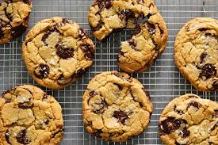

Recipe For Cooking Protein Cookies

Protein Cookies
These cookies are gluten free, dairy free, sugar free, low calorie, Paleo, vegan,
and made with only 6 ingredients. Perfect post-workout snack!
Do you always feel guilty eating your favourite foods?
Well feel guilty no more as we have made a recipe just for you.
This is the perfect recipe for people who would like a great tasty snack that is actually beneficial
Ingredients
- 1 small ripe banana
- ¼ cup golden flax seeds
- 2 teaspoons chia seeds
- 2 scoops vanilla protein powder
- 1 tablespoon powdered peanut butter
- 2 tablespoons dairy-free mini chocolate chips
Steps
- Preheat oven to 350 degrees F (175 degrees C). Line a baking sheet with parchment paper.
- Mash banana in a bowl with an electric mixer until creamy. Blend in flax seeds and chia seeds.
Mix in protein powder and powdered peanut butter. Fold in chocolate chips using a spatula.
- Drop 6 cookies onto the baking sheet using an ice cream scoop. Flatten each cookie with the palm of your hand.
- Bake in the preheated oven until cookies are firm in the center and edges are browned, 8 to 9 minutes.
Transfer to a wire rack; cool for 10 minutes.